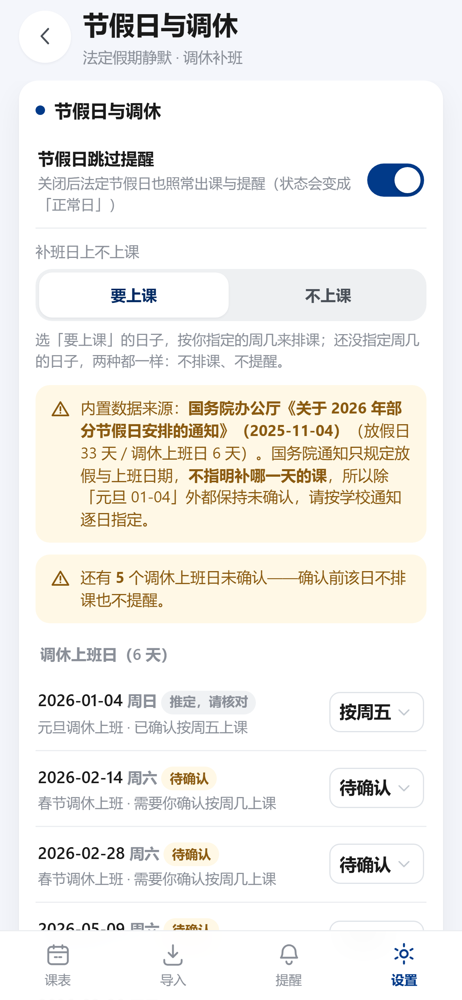
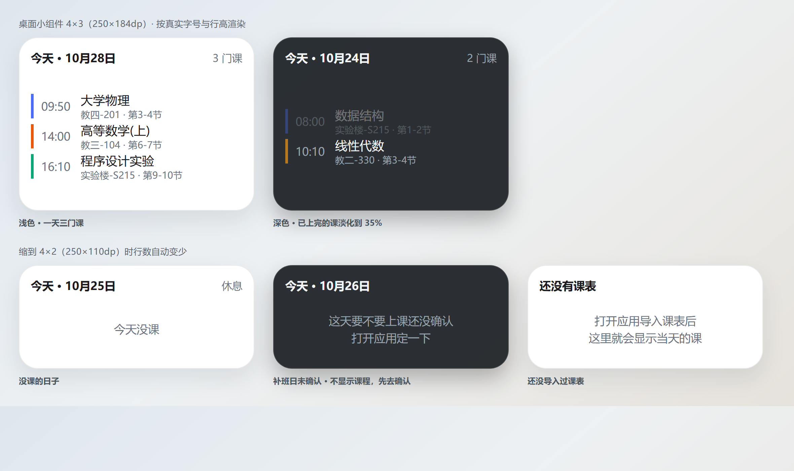

自动抓取教务系统的课表，课前准时提醒，桌面上抬眼就能看。 不需要注册，没有服务器，所有数据只存在这台手机上。
不用每天点开 App 记课程 —— 该提醒的时候提醒，该安静的时候安静。
填一次学号密码，自动抓取整学期课表。学校页面改版也能手动登录兜底。
用系统闹钟而不是定时器，掉电、清后台都不影响。连堂课之间不会重复响。
今天的课直接摆在桌面上，不用解锁进 App。跟随系统深浅色。
停课、改时间、换教室、补课、临时活动 —— 拖一下就改完，随时能撤销。
节假日到底上不上课、这门课这周有没有、调课之后算不算冲突 —— 这些 App 自己算。
法定假期不打扰；补班日如果不知道按周几上课，它会明确标成「待确认」， 而不是擅自当成有课、让你白跑一趟。

3×2 的小组件，一行一门课：课名、教室、节次、起止时间。 上完的课自动变淡，当前节次一眼可辨。

支持 Android 16 的实时动态胶囊：距离上课还有几分钟，锁屏和状态栏上持续可见， 不需要解锁确认。
组会、讲座、社团例会，按具体时间加进去，和课程一起提醒。 不用为了它去改整张课表。
Android 直装包，下载即用。